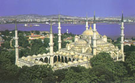

| Sultan Ahmet Camii, 1609-1616 yılları arasında sultan I. Ahmet tarafından İstanbul'daki tarihî yarımadada, Mimar Sedefkâr Mehmet Ağa'ya yaptırılmıştır.Cami Mavi, yeşil ve beyaz renkli İznik çinileriyle bezendiği için ve yarım kubbeleri ve büyük kubbesinin içi de gene mavi ağırlıklı kalem işleri ile süslendiği için Avrupalılarca "Mavi Cami (Blue Mosque)" olarak adlandırılır. Ayasofya'nın 1934 yılında camiden müzeye dönüştürülmesiyle, İstanbul'un ana camii konumuna ulaşmıştır. Aslında Sultan Ahmet Camii külliyesiyle birlikte, İstanbul’daki en büyük yapı komplekslerinden biridir. Bu külliye bir cami, medreseler, hünkar kasrı, arasta, dükkânlar, hamam, çeşme, sebiller, türbe, darüşşifa, sıbyan mektebi, imarethane ve kiralık odalardan oluşmaktadır. Bu yapıların bir kısmı günümüze ulaşamamıştır. Yapının mimari ve sanatsal açıdan dikkate sayan en önemli yanı, 20.000'i aşkın İznik çinisiyle bezenmesidir. Bu çinilerin süslemelerinde sarı ve mavi tonlardaki geleneksel bitki motifleri kullanılmış, yapıyı sadece bir ibadethane olmaktan öteye taşımıştır. Caminin ibadethane bölümü 64 x 72 metre boyutlarındadır. 43 metre yüksekliğindeki merkezi kubbesinin çapı 23,5 metredir. Caminin içi 200'den fazla renkli cam ile aydınlatılmıştır. Yazıları Diyarbakırlı Seyyid Kasım Gubarî tarafından yazılmıştır. Çevresindeki yapılarla birlikte bir külliye oluşturur ve Sultanahmet, Türkiye'nin altı minareli ilk camiidir. |